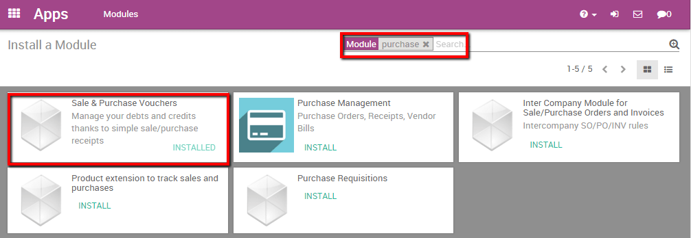

Purchase receipts are different than vendor bills. Vendor bills are requests for payment. If I issue a Purchase Order my vendor will in most business cases send me a Vendor Bill. Depending on his invoice policy I then have a defined amount of time to pay the Bill. A Purchase receipts are confirmations of received paiements. They are my day-to-day ticket receipts.
From an accounting point of view this makes a difference as a Vendor Bill will first credit a debt account before reconciling with the bank account. On the other hand we usually immediately pay the purchase receipts, which means no debt account is necessary.
Moreover purchase receipts can have a different tax amount per product line, as vendors bills apply one taxe amount over the entire bill.
If my company's bank account is used to pay for goods were only a purchase receipt are issued I should use the purchase receipts function in Odoo to handle them in accounting.
Let's take the following example: we need to buy foreign tea for our customers from a local tea store that doesn't issue bills. We go every week buy 50 euros worth of tea and a teapot worth 20 euros. We pay with the company's bank account.
Configuration
To handle purchase receipts in Odoo one module and one app has to be installed. Go into the app module and install the accounting app.

Then, go in the search bar, delete the default module search, and search for "purchase". Install the Sale & Purchase Vouchers module.
Register a receipt
By installing the Sale & Purchase Vouchers I've made the new Purchase Receipts drop down menu visible in the accounting app.
To import our 50 euros worth of tea purchase receipt, enter the accounting app, select .
Create a new Purchase Receipt and fill in all the necessary information. Note that you have the choice in the Payment field between Pay Later or Pay Now. It's a significant difference as Pay Later, will generate a debt accounting entry whereas Pay Now will immediately credit the Bank account.
In most cases you immediately pay, we will thus select the Pay Directly option. Add the products, the related account and the appropriate taxe. For the example we suppose the tea is a 12% taxe and the Tea Pott 21%.

Validate the Purchase Receipt to post it. Don't forget you need to reconcile payments in order to completely close the transaction in your accounting.